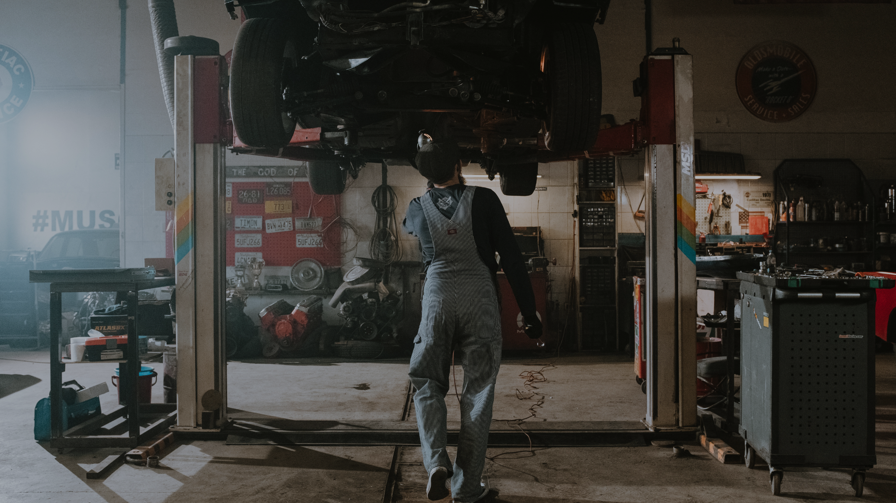

Além dos serviços de manutenção e reparação, a Tecno Diesel Americana também possui um braço de desenvolvimento de equipamentos e treinamento profissional voltados aos profissionais da área.
Entre em contato